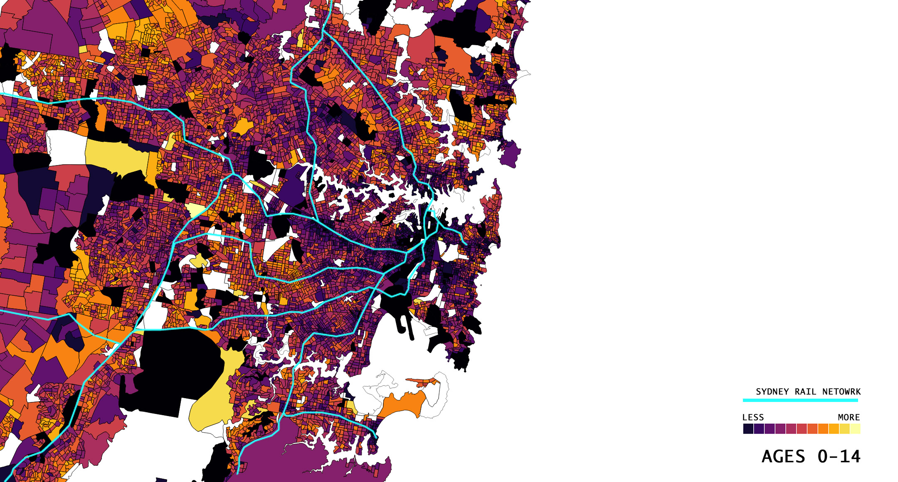
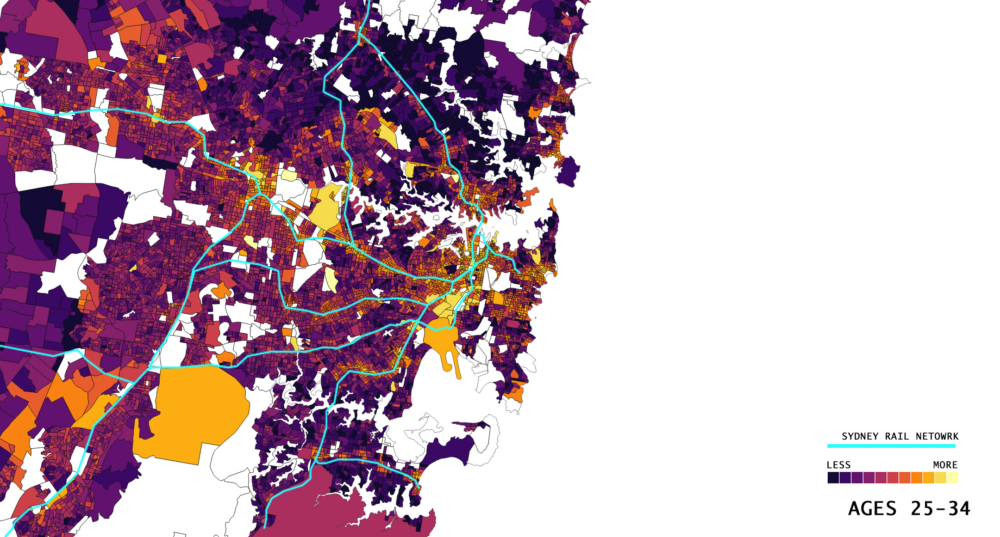

The data is collected as a study of the population trends in Australia. It is collected every 5 years so that there is benchmark data for future studies. This information may be useful to lawmakers, marketing companies, political groups or for the curiosity of the general public.
This data could for example provide broader information on where families reside in NSW and indicate a story on Sydney's housing crisis. By collating the data, the government is provided a visual guide to plan and provide for Sydney's logistical needs.
The dataset is 'Place of Usual Residence on Census Night by Age'. The age groups are segmented into 10 year baskets from the age of 0 to 85 and over. The models will focus on age groups 0-14, 15-24, 25-34 and 35-44.
Based on the assumption of data collected on this 1 night timeframe, the modelled the dataset will aim to visualise where certain age groups tend to be during the night between 2011 and 2016. The model will also visualise where these certain age groups' usual residence is located throughout Sydney 2016. Please see 'Mapping' section to intereact with the dataset.
Living location in Sydney depends on many factors. It will depend on age, income, relationship status and family. It will also depend on where jobs are located in comparison to where usual residence is. The study in the data set has found particularly interesting patterns for where age groups are living.
In this particular study, the initial assumption made is that age group 0-14 live with a typical Sydney family. Another assumption made was that, age group 25-34 are adults, yet to have their own family and have full time jobs that require public transport commute.
Below are images of the two age groups of interest. The distinct pattern provides evidence that age group 25-34 are living in closer proximity to public transport, whereas families are further distanced. It is easily recognisable that families are also living further out into the suburbs whereas the age group 25-34 are densley populated around the Sydney CBD. In turn, families are seeking for houses with multiple bedrooms and backyards, which is better found towards the suburbs and career focused adults are seeking for any type of residence in convenience to the commute to work - which are typically in high rise apartments and unit blocks developed closer to public transport.
The concept of the Latte Line is due to jobs are located in the CBD, whereas housing is devloping out west. This data supports the issue with accessibility to jobs and outreach to those who simply cannot afford housing near the CBD. It is no wonder that living prices have increased approximately 70% over the past 5 years, according to figures from property researcher CoreLogic.


This data is significant for people across Sydney as it influences the transition from living at home to living alone. It is also able to provide information about where social hotpsots are trending as more private sectors such as Westfields and Woolworths are taking advantage of housing and infrastructure development further from the Sydney CBD.
A Sydney Morning Herald article reports of builder Meriton's building boom in the South-East. It discusses the concept of developing 'mini-villages' which are popular amongst young couples who want the most of space, convenience and services.
The latte line in Sydney is a concept line reflecting that those living above the line are more advantaged than those below the line. However, with this data set, there is no clear visual trend representing the latte line as the model is only mapping living locations across the age
Across Sydney, there is definitely and imbalance of where people are trending to be during the night. Also because Census night is typically held on a Tuesday night, it is assumed that the data shows whethere people are still at work or where they tend to be after work.
The CBD is densely populated during the night as opposed to the suburbs. However, this does not always indicate an unfortunate story of jobs being too distant from home. It must not be fogotten that the CBD's proximity is ultimately alongside iconic entertainment precincts such as Darling Harbour and Circular Quay.
Even with infrastructure plans for a Western Sydney airport and a second CBD equal density can never be met. With this being said, there are policies that can provide Australians with a higher rating in happiness and satisfaction with housing and commute.